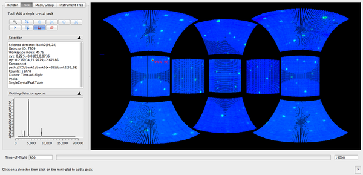

Exercises¶
Exercise 1¶
Load SXD23767.raw into MantidPlot
Open the Instrument View
Change colour map to IDL-rainbow
Change the colour scale to Log10 set the scale range to be between 1 and 1e9
Go to the Pick tab. choose Add single crystal peak
 go to a Bragg peak and left-click. The
mini-plot should now be showing a plot of counts vs TOF for that
detector.
go to a Bragg peak and left-click. The
mini-plot should now be showing a plot of counts vs TOF for that
detector.Move the mouse over the mini-plot, right-click the mouse and select Save plot to workspace, plot the workspace called Curves which should now be in the MantidPlot workspace panel.
Go back to the Instrument View, and the same mini-plot. This time select a peak in the plot and left-click the mouse. A new peak should be shown in the instrument view. A workspace (PeaksWorkspace) called SingleCrystalPeakTable should also exist now in the MantidPlot workspace panel. 
Double click the new PeaksWorkspace to open it as a table and verify that the TOF value is the same as shown in the mini-plot and the detector ID is the same as shown in the text area above the mini plot
Now in the Instrument View window use the Erase single crystal peak(s)
 tool to remove the Peak just added
tool to remove the Peak just added
{kind=link}
Exercise 2¶
Here we are going to mask out the beam stop and the edge of the main detector for a small angle dataset.
Load LOQ48097 data set.
Open the Instrument View by right-clicking on the workspace and selecting Show Instrument.
If the Instrument View shows one of the “unwrapped” projections switch to Full 3D on Render tab.
Select the Axis view to Z+ (to avoid having a view with the front LOQ detector in front of the main detector)
Make sure that the colour map axis has the Log10 scaling. The instrument display should look like this:
Switch to the Draw tab.
Select the ellipse drawing button
 .
.Draw an ellipse in the middle of the panel to cover completely the red disk there.
Select the button for drawing a rectangular ring

Draw a ring masking the edge detectors of the panel. Use its control points to adjust it to the right sizes.
Click button.
Click Apply and Save button and select As Mask to Workspace. A workspace named “MaskWorkspace” is created.
Click button. The instrument image returns to the original, all masking is removed.
Right-click on “MaskWorkspace” and select Show Instrument.
Change to Full 3D. The image should look like this:
{kind=link}
{kind=link}
{kind=link}
{kind=link}
{kind=link}